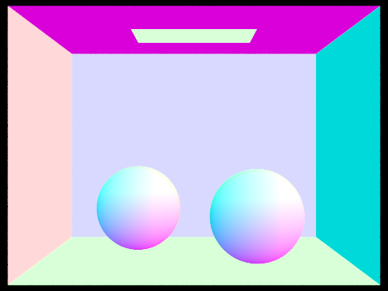

In this project, we implemented our pathtracing renderer by implementing rays and ray tracing, defining ray intersections with triangles, spheres, and bounding boxes, setting up the bounding volume hiearchy recursively, defining the BSDF for diffuse surfaces, estimating direct lighting via sampling through uniform hemisphere or importance, implementing global illumination through recursion and Russian Roulette termination, and implementing adaptive sampling.
To generate our camera ray, we first got the position of the bottom left corner of our sensor in camera space, which is (-tan(0.5 x hFov), -tan(0.5 x vFov), -1). Since hFov and vFov are given in degrees, we had to convert it to radians to use in the tan function. From there, we add to its x and y components the converted position of the x, y coordinate in image space, which is x * width of the sensor and y * height of the sensor.
For raytrace_pixels, given the x, y coordinates in image space, we will generate a ray and sample its illumination for num_samples times. We use the gridSampler to allow us to choose a position in the pixel randomly and use that to generate the ray. After we have collected num_samples samples, we divide the accumulated illumination by num_samples to average it out before updating the pixel in the sampleBuffer.
To test for the triangle intersection, we followed the Möller-Trumbore algorithm. This involves getting two vectors along the edges of the triangle, getting the vector from a vertex on the triangle to the origin of the ray, and getting the cross products of the ray direction vector with one of the edge vectors and the cross product of the vector from the triangle vertex to ray origin and the other edge vector. Using these computations, we can get the time of the intersection and the barycentric coordinates of the point of intersection on the triangle. We check that if the time of intersection is within the min_t and max_t of the ray, then we can confirm that it is an intersection and we will fill out the intersection object. To test for the sphere intersection, we set up the quadratic formula to find the times of intersection. If the determinant is negative, then there is no intersection and we return false. Otherwise, we will get two times t1 and t2 from the quadratic equation. We take the lower time that is not negative and check if it is within the min_t and max_t of the ray. If it is, then we confirm that it is an intersection and fill out the intersection object.
|  | |
|
For hemisphere sampling, the pdf is always 1/2*PI and we can sample w_in randomly from the provided hemisphereSampler. We then create a new ray that starts at hit_p with direction o2w * w_in to represent the one bounce lighting. If the ray intersects something in this BVH, then we know the radiance is the zero bounce radiance at that intersection along this ray, and we set this vector to L. If there is no intersection, then L is 0. We also need to evaluate the BSDF at the original intersection with our w_on and w_in, and we can set this term to f. Lastly we need to get the angle of our new ray to the normal of the original intersection, which we can simply calculate as the dot product of the intersection normal and o2w * w_in, and we can call this cosTheta. Our final term that we add to L_out is f * L * cosTheta / pdf. We do this for num_samples times, and then average out the accumulated L_out by dividing it by num_samples before we return L_out.
For importance sampling, the operations are mostly similar. We begin by iterating over the lights in the scene with the intention to generate ns_area_light number of samples per light. If it is a direct light, then we will only sample it once but weigh its contribution by a factor of ns_area_light times. To generate a sample for a light, we will call sample_L on the light to obtain the radiance from the light, the w_in, the distance to light, and the pdf. We generate a ray with origin hit_p and direction w_in and we initialize its min_t value as EPS_F and max_t values as the distance to the light - EPS_F. If there is any intersection along this ray, then the radiance is 0. Otherwise, we proceed with the final calculation, which is the same as above: f * L * cosTheta / pdf. Lastly, we divide our accumulated L_out by num_samples (which is equal to the number of lights * ns_area_light).